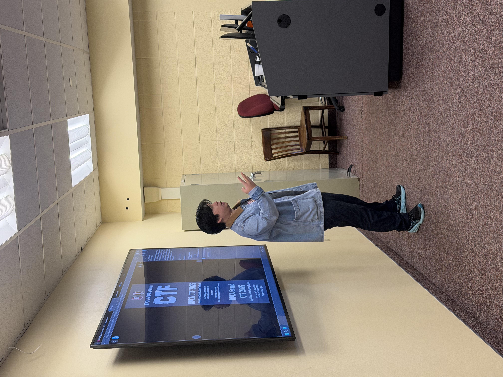
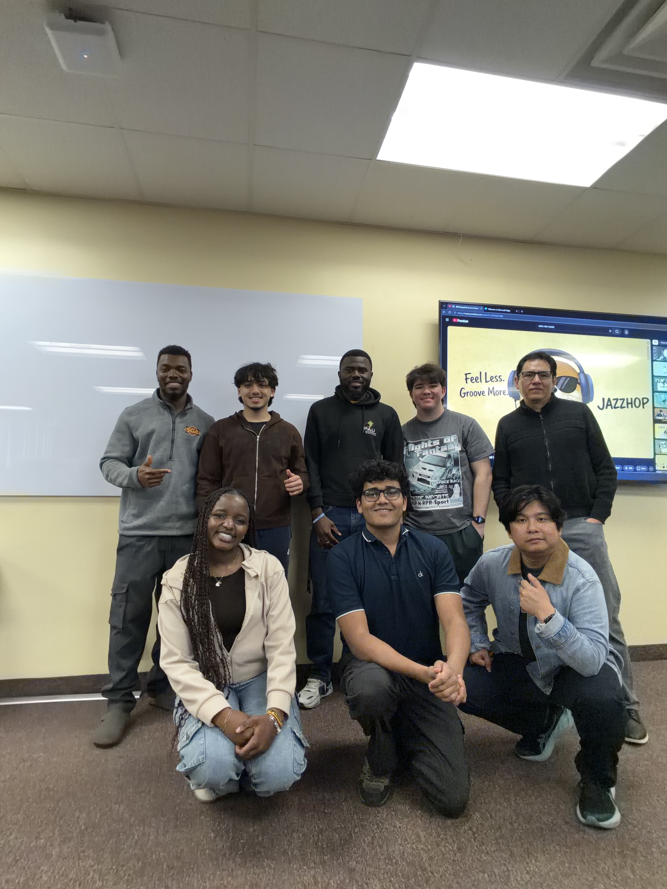

We wrapped up the semester with our handover ceremony, where outgoing President Pattarapong Ramungthong (Pong), who was crucial to our success throughout the semester, was bade farewell. In his farewell speech, Pong reflected on his time leading the club.
"It has been an amazing journey with the club." — Pong, Former President, Gannon Hacks Cyber Club
He shared a few words with the club, recommended several materials for future training sessions, and made clear he'll always be rooting for Gannon Hacks. He also promised to keep following the club's activities and to join virtually whenever called on to help with training.

What's Next for Pong
Pong now returns to Thailand, where he takes up a role as a Senior Digital Forensic Analyst with the Royal Thai Police Service, a fitting next step for someone who spent his time with the club pushing its technical training forward.
A New Chapter
Incoming President Abraham Klogo spoke about what lies ahead for the club under the new leadership.
"Pong set a standard for this club that we intend to build on, not just match. We're carrying that momentum straight into next semester." — Abraham Klogo, President, Gannon Hacks Cyber Club
"Leadership transitions like this are where you really see a club's foundation tested, and Gannon Hacks passed that test." — Professor Ronny Bazan-Antequera, Technical Advisor, Gannon Hacks Cyber Club
"Pong made this club feel like a place where you could just show up and learn, and that's exactly what we want to keep going." — Jeanalex Namuswe, Gannon Hacks Cyber Club

As one chapter closes, the club's momentum carries forward into the next, built on the same foundation of research, competition, and community that defined this semester.